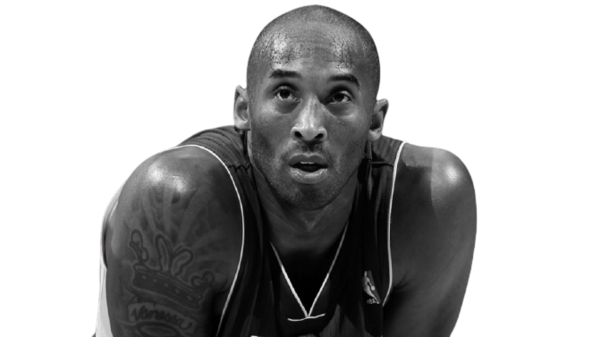

KOBE BRYANT
The black mamba

One year ago, the world stopped as news circulated of a helicopter crash outside of Los Angeles that killed Lakers great Kobe Bryant, his 13-year-old daughter, Gianna, and seven others. Sports commentators cried on live television. Fans and mourners descended upon Staples Center. NBA teams took 24-second shot-clock violations in honor of his number. In the year since, a pandemic arrived, protests started over racial injustice and a new president was inaugurated. But even amid so much change, people are taking time to remember the lives lost on a hillside in Calabasas.
One year ago, the world stopped as news circulated of a helicopter crash outside of Los Angeles that killed Lakers great Kobe Bryant, his 13-year-old daughter, Gianna, and seven others. Sports commentators cried on live television. Fans and mourners descended upon Staples Center. NBA teams took 24-second shot-clock violations in honor of his number. In the year since, a pandemic arrived, protests started over racial injustice and a new president was inaugurated. But even amid so much change, people are taking time to remember the lives lost on a hillside in Calabasas.
Here's what has Kobe achieved in his basketball career:
- 5-time NBA champion: 2000, 2001, 2002, 2009, 2010
- 7 NBA Finals appearances: 2000, 2001, 2002, 2004, 2008, 2009, 2010
- 2-time NBA Finals MVP: 2009, 2010
- NBA Most Valuable Player: 2008
- 18-time NBA All-Star: 1998, 2000, 2001, 2002, 2003, 2004, 2005, 2006, 2007, 2008, 2009, 2010, 2011, 2012, 2013, 2014, 2015, 2016
- 18 consecutive selections, 13 consecutive appearances (No All-Star game in 1999 due to a league-wide lockout)
- Missed the 2010, 2014 and 2015 games due to injury
- 4-time NBA All-Star Game MVP: 2002, 2007, 2009, 2011 (shared the 2009 award with Shaquille O'Neal)
- 15-time All-NBA Team selection
- First team: 2002, 2003, 2004, 2006, 2007, 2008, 2009, 2010, 2011, 2012, 2013
- 12-time All-Defensive Team selection
- NBA All-Rookie Team selection
- NBA Slam Dunk Contest champion: 1997
- 34-time Player of the Month: December 2000, November 2001, January 2003, March 2004, January 2006, April 2006, December 2006,
March 2007, April 2007, February 2008, April 2008, December 2008, January 2009, December 2009, March 2011, December/January 2012, February 2013 - 2nd most points in a game: 81
- 2nd most points in a half: 55
- 3rd most 40 point games: 135